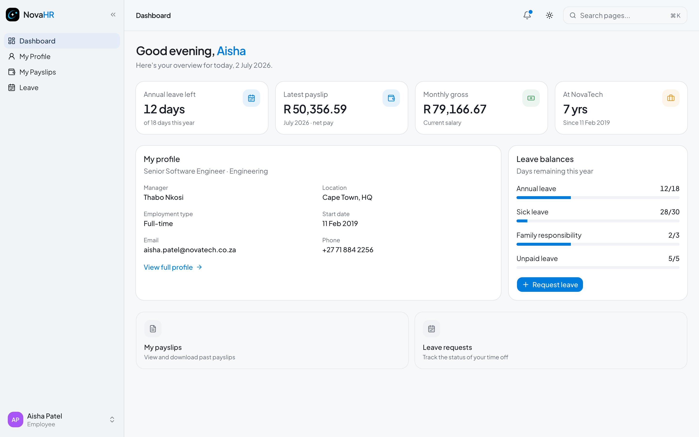

NovaHR
NovaHR
Employee
User Manual
South African HR and Payroll Platform
Your self-service guide to NovaHR
Employee Role
Employee
Your role in NovaHR
As an employee you have a personal, self-service workspace. You can view your own profile, manage your leave requests, download your payslips, and look up basic information about your colleagues. Your salary, banking details, and personal information are never visible to other employees.
What you can do
- View and edit your own profile details
- Check your leave balances for all leave types
- Submit leave requests with supporting documents
- Track the status of your leave requests
- View and download your monthly payslips
- Complete your onboarding checklist
- Upload a profile photo
What you cannot see
- Other employees' salaries or banking details
- Other employees' payslips or tax numbers
- Company-wide payroll totals
- PAYE, UIF, or SDL return records
- Other employees' leave balances
- Settings (contact your HR administrator)
Check your email for a message from NovaHR with the subject "You have been invited to [Company Name]". Click the Accept invitation button in the email. The link is valid for 7 days.
Set your password on the accept-invite page. Your name and email are already filled in from the invitation. Choose a strong password (at least 8 characters) and click Join workspace.
You are immediately signed in and taken to your personal dashboard. Bookmark novahr-five.vercel.app for future logins.
🔐Returning to NovaHR: Go to novahr-five.vercel.app and sign in with your email address and the password you set during the invite process. If you forget your password, click Forgot password on the login page to receive a reset email.
📋If you did not receive an invitation email, ask your HR administrator to check Settings > Users and resend the invite, or to copy the invite link and send it to you directly via WhatsApp or your company email.

1
2
3
4
5
6
7
8
9
10
1 Navigation: Dashboard, My Profile, My Payslips, Leave
2 Annual leave remaining for the year
3 Latest payslip net pay amount
4 Your monthly gross salary
5 Time at the company (years of service)
6 Your profile summary card with manager and employment type
7 Leave balances with progress bars (days used vs. total)
8 My payslips shortcut
9 Leave requests shortcut
10 Your name, role badge, and sign-out option
💡The leave balance card on the right side of your dashboard shows your remaining days at a glance. The progress bar goes from green (plenty of leave remaining) to orange (low balance). Click Request leave directly from the dashboard to submit a new request.
1 Profile photo: click to upload a new photo (JPG or PNG)
2 Personal information: name, contact details, and address
3 Job information: title, department, manager, and start date
Go to My Profile in the sidebar to view all of your details. As an employee you can update certain fields yourself:
| Information | Can you edit it? |
|---|
| Profile photo | Yes: click the camera icon on your avatar |
| Phone number | Yes: click the edit icon next to the field |
| Home address | Yes |
| Emergency contact | Yes |
| Job title, department, salary | No: contact HR to make these changes |
| Email address (login) | No: contact HR to update |
| SA ID number | No: contact HR if there is an error |
| Banking details | No: contact HR to update |
📌If any details on your profile are incorrect, for example a wrong ID number or salary, contact your HR administrator by email or in person. They can update these from the employee management section.
When you first join NovaHR your profile may have an Onboarding status badge. Your HR administrator has set up a checklist of tasks for you to complete. Go to My Profile and scroll down to the Onboarding section.
Find the onboarding checklist on your profile page. It shows tasks like "Submit signed contract", "Upload copy of ID", or "Complete bank details confirmation".
Tick each task once you have completed it. Click the checkbox next to the item; it saves automatically.
Upload your profile photo by clicking the camera icon on your avatar at the top of the profile page. A clear headshot is recommended.
Once all items are ticked, your status changes from Onboarding to Active.
💡Your progress percentage is visible in the employee directory (to HR and your manager) so completing the checklist quickly shows that you have settled into the onboarding process.
1 Request leave button to submit a new request
2 Tab navigation: Requests, Balances, Policies, Public holidays
3 Your leave history: type, dates, working days, and status
4 Status badge: Pending (orange), Approved (green), Rejected (grey)
Go to Leave in the sidebar to see all of your leave requests. The list shows every request you have submitted, sorted with the most recent at the top.
💡Pending requests show a yellow/orange badge. Once your manager or HR approves or rejects, the badge updates and you receive a notification in the bell icon at the top of the page.
Click the Balances tab on the Leave page. This shows your current remaining days for each leave type. The progress bar turns orange when your balance is running low.
| Leave type | What it means for you |
|---|
| Annual leave | Paid holiday; you are entitled to 18 working days per year |
| Sick leave | 30 working days over a 36-month cycle (roughly 10 per year) |
| Family responsibility | 3 days per year for family emergencies |
| Study leave | 5 days per year for examinations or study commitments |
| Unpaid leave | 5 discretionary days per year; your pay is deducted for these days |
📌Maternity, parental, adoption, and commissioning leave entitlements are handled separately as one-off events. They do not appear as ongoing balances. If you are planning any of these, speak to HR who will guide you through the process.
1 Choose the type of leave (see list below)
2 Select start and end dates; working days are counted automatically
3 Add a reason and optionally attach a document
4 Submit request button
Click Request leave at the top right of the Leave page, or use the button on your dashboard.
Select the leave type. Leave types are grouped into Standard (annual, sick, family responsibility), Family and parental (maternity, parental, adoption, commissioning), and Other (study, unpaid). A description of each type and its statutory basis appears below the dropdown when you select it.
Choose your start and end dates. The form automatically counts the number of working days in your chosen range, excluding weekends and South African public holidays. The count appears below the date fields. The form will not let you submit a request where the working-day count is zero (for example if you select only a weekend).
Add a reason. Keep it brief, for example "Medical appointment" or "Family holiday". This note goes to your manager and HR for the approval decision.
Attach a supporting document (optional). For sick leave lasting more than 2 days, most employers require a medical certificate. Click Attach supporting document and upload a JPEG, PNG, or PDF (maximum 10 MB).
Click Submit request. Your manager (and HR) receive an email notification. The request appears in your leave list immediately with a Pending badge.
✅Once your leave is approved, your balance is automatically reduced by the number of working days. You receive an email confirmation and a notification in the NovaHR app.
⚠️Submitting a request does not automatically approve it. You must wait for your manager or HR to approve before treating the time as confirmed leave. If you have not heard back within a day or two, follow up with your manager directly.
| Leave type | BCEA entitlement | Who approves | Pay during leave |
|---|
| Annual | 18 working days/year | Manager or HR | Full salary |
| Sick | 30 days per 36 months | HR | Full salary |
| Family responsibility | 3 days/year | Manager or HR | Full salary |
| Maternity | 4 months (88 days) | HR | UIF benefit (apply at SARS) |
| Parental | 10 consecutive days | HR | UIF benefit |
| Adoption | 10 weeks (child under 2) | HR | UIF benefit |
| Commissioning parental | 10 weeks | HR | UIF benefit |
| Study | 5 days/year (company policy) | Manager or HR | Full salary |
| Unpaid | 5 days discretionary | HR | No pay; deducted from gross |
📌Click the Policies tab on the Leave page to read the full description of each leave type, including the specific BCEA section that governs it.
1 List of all payslips: period, pay date, gross, net. Click any row to view or download.
Click My Payslips in the sidebar navigation.
Find the payslip you want in the list. Payslips are listed by period (most recent first) and show the gross and net pay.
Click the payslip row to open the detailed view with all earnings and deductions listed.
Click Download PDF to save a branded payslip to your device for bank applications, rental agreements, or any other purpose that requires proof of income.
📱Payslip PDFs are branded with your company logo and look professional for third-party submissions such as home loan applications or visa income requirements.
| Payslip line | What it means |
|---|
| Basic salary | Your monthly gross before any deductions |
| Travel allowance | Monthly travel allowance (80% taxable unless you have a logbook) |
| Housing allowance | Fixed monthly housing benefit (fully taxable) |
| Unpaid leave deduction | Amount deducted for any unpaid leave taken this month |
| Gross earnings | Total earnings before deductions |
| PAYE | Income tax calculated by SARS tax tables; withheld by your employer |
| UIF (employee) | 1% of gross up to R177.12/month; funds unemployment benefits |
| Pension contribution | Your elected % of gross into your retirement fund (tax-deductible) |
| Medical aid tax credit | Monthly credit applied against PAYE for medical aid membership |
| Net pay | The amount deposited into your bank account on pay day |
💡If you believe your PAYE is too high or your net pay is incorrect, check that your ID number and medical aid dependant count are correctly recorded on your profile. These directly affect your tax calculation. If in doubt, speak to your HR administrator.
📌Your employer also pays UIF employer (1%) and SDL (1%) on top of your gross. These do not appear as deductions from your take-home pay but are visible on the full payslip detail.
Go to Employees in the sidebar to see the company directory. As an employee you can see:
- Names, job titles, and departments of all active colleagues
- Email addresses and phone numbers (to contact colleagues)
- Employment type and office location
You cannot see salaries, banking details, ID numbers, or leave balances of other employees.
| Task | Where to go |
|---|
| Check remaining annual leave | Dashboard (right panel) or Leave > Balances tab |
| Submit a leave request | Leave > click Request leave (top right) |
| Check the status of a request | Leave > Requests tab |
| Download your latest payslip | My Payslips > click most recent row > Download PDF |
| Update your phone number or address | My Profile > click the edit icon next to the field |
| Upload a profile photo | My Profile > click the camera icon on your avatar |
| Complete onboarding checklist | My Profile > scroll to Onboarding section |
| Look up a colleague's contact | Employees (directory) |
| Reset your password | Login page > Forgot password |
- ✔ You are entitled to 18 working days of annual leave per year
- ✔ Weekends and SA public holidays are not counted in your leave days
- ✔ Annual leave must be approved before it is taken
- ✔ Leave taken during a public holiday does not use an annual leave day for that day
- ✔ Unused annual leave does not automatically pay out; speak to HR about any carryover policy
If something is wrong or you need help with NovaHR, speak to your HR administrator. They are your first point of contact for any account issues, balance corrections, or questions about your payslip.
For platform support, email: mtshwenewesley@gmail.com